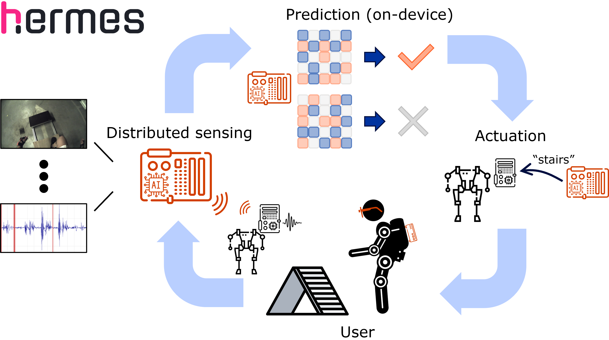

Closing the Loop in Multimodal Edge AI for Healthcare
Abstract
Diverse R&D use cases - from physiological dataset curation, to continuous monitoring and wearable intervention devices, in fixed labs and in the wild, share in common the need for reliable continuous multimodal sensing and realtime processing at the edge. These multimodal signals from distributed sensors encapsulate rich information about the state of the person and their environment, exceeding the depth of insights represented by a single modality. However, multiple technical cross-disciplinary challenges inhibit the efforts of researchers in their core objectives. By streamlining the system design flow and leveraging reusable extensible community-driven frameworks, we can accelerate the process of developing novel edge AI and sensing systems for transformative healthcare applications. In this interactive half-day tutorial, we will teach the use of a new developer-friendly framework for end-to-end edge AI system design and deployment to the wider CPS/IoT audience, using a visually entertaining use case of assisted mobility devices (lower-body exoskeleton or a leg prosthesis). The participants will gain practical experience and an intuition for balancing design decisions of real-time distributed multimodal edge AI and AIoT sensing systems. The session will cover real-world relevant components - multimodal distributed sensing and high-quality dataset curation, data fusion and streaming multimodal inference strategies, hardware-aware embedding of AI. The guided hands-on part of the session will help participants pass the learning curve of adapting the framework with new sensing, actuation, and AI processing functionality, and integrating it with the streamlined AI workflows and toolchains. At the end of the tutorial, participants will (1) have a more cohesive view on the end-to-end edge AI system development, (2) know how to accelerate their prototyping efforts using HERMES, (3) have a locally-run tool for curation of high-quality multimodal datasets.

Tutorial Schedule
Date: May [TBA], 2026 (9:00 - 13:00 CET)
Tutorial duration: 240 min
Tutorial's type: lecture style + interactive hands-on + collaborative demo
-
Welcome and introduction
(15 min)
- Introduction of end-to-end edge AI pipelines and motivation of the tutorial (5 min)
- Introduction of the HERMES framework as a prototyping accelerator (7 min)
- Tutorial's overview (3 min)
-
Multimodal data fusion
(30 min)
-
Key design knobs of practical realtime multimodal systems
- Sources of latency
- Inference strategies
- Latency and forecasting horizon
- Temoral resolution of predictions
-
Trade-offs and design intuition
- Balancing latency and prediction horizon
- Relaxing inference time budget
- Impact of model adaptations
-
Key design knobs of practical realtime multimodal systems
-
Design closed-loop system
(90 min)
- Exoskeleton / prosthesis usecase context, objectives and constraints
- [Hands-on]: Extend HERMES to support a new integrated sensor
- [Demo]: Small-scale multimodal data collection with the system
- [Follow-along]: Analysis of resource utilization, and signals
- [Follow-along]: Iterative constraint-driven AI model design
- Break + QA (15 min)
-
Realtime demonstration
(60 min)
- [Hands-on]: Inject pretrained AI model in a closed-loop HERMES system
- [Hands-on]: Deploy application onto embedded hardware
- [Demo]: Validate the realtime system by piloting the device
-
Future directions
(30 min)
- Concluding remarks
- Open challenges
- Call for collaborations
- Q&A
Useful Materials
HERMES documentation: [url]
Slides: [TBA]
Hands-on: [TBA]
Recording: [TBA] (after event)
Organizers
Maxim is a graduating PhD in the team of Prof. Bart Vanrumste at the e-Media Research Lab of KU Leuven in Belgium. He develops novel software and hardware edge AI technologies that enable real-time distributed sensing and continuous multimodal processing of sensor data for intelligent ambient healthcare applications. Prior to KU Leuven, Maxim worked at the Nokia Bell Labs research centre in Antwerp, Belgium, where he patented a look-ahead computation hardware mechanism for efficient and energy-preserving AI computer architectures. With domain expertise in digital design, networks, electronics, distributed parallel software, and embedded systems, he focuses on delivering practical solutions from the systems-level perspective to meet complex R&D challenges.
Jona is an Assistant Professor in the e-Media Research Lab at KU Leuven. His research interests include tinyML and wireless networking, with a focus on designing hardware-aware AI algorithms tailored to low-power embedded systems for innovative healthcare applications. Prior to KU Leuven, he was a Senior R&D Engineer at CSEM in Switzerland, where he led several national and international (EU) tinyML-related research projects. He obtained a PhD from KU Leuven in 2020 on Robust Visible Light Communication Networks (LiFi). With his team at CSEM, he won the first prize of the international tinyML Smart Weather Station Challenge 2022, where they built an acoustic weather station powered by embedded AI. During his time at CSEM, he was a member of the Swiss EdgeAI Foundation branch, consisting of members from both Swiss industry and academia.
Louis is a leading postdoctoral researcher in human-robot interaction and rehabilitation robotics at the Robotics & Multibody Mechanics (R&MM) and BruBotics research groups of Vrije Universiteit Brussel (VUB) in Belgium. His work focuses on the mechatronic design and advanced control of lower-limb assistive technologies, including active prostheses (like the CYBERLEG X-Leg) and exoskeletons. Dr. Flynn is a key contributor to the design of adaptive controllers that use human-in-the-loop optimization (HILO) strategies to personalize robotic assistance of intelligent mobility devices, reduce user effort, and maximize functional ability of the wearer. His research is dedicated to translating compliant actuation and bio-inspired robotics into safe, energy-efficient, and user-accommodating devices for real-world impact.
BibTeX
@misc{multimodaledgeai-tutorial-cpsiot2026,
author = {Yudayev, Maxim and Beysens, Jona and Flynn, Louis},
title = {Closing the Loop in Multimodal Edge {AI} for Healthcare},
howpublished = {Tutorial at CPS-IoT Week},
month = may,
year = {2026},
address = {Saint-Malo, France},
note = {Presented May 11--14, 2026}
}